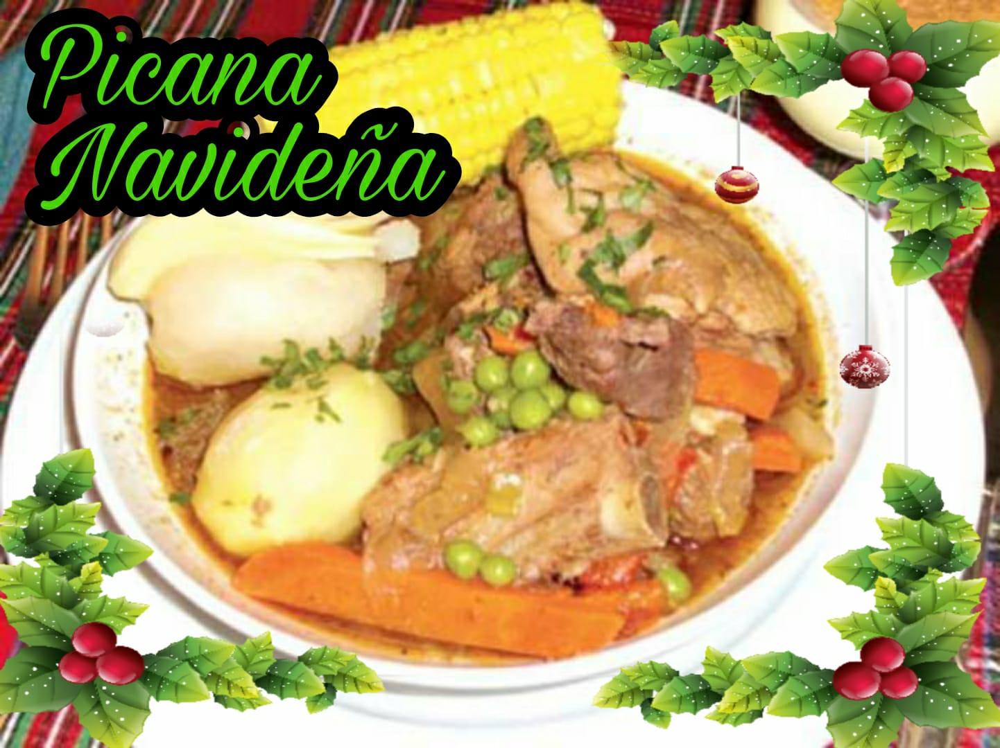

INGREDIENTES:

En un sartén a fuego alto sella las carnes de res con un corro de aceite hasta que quede doradas por todos los lados. Al momento de sacar poner sal y acomodar en una olla mas grande junto a unas ramas de perejil donde se cocinara la picana. Vierte 4 litros de agua a fuego alto y deja cocinar durante 2 a 3 horas o hasta notar que la carne ablande un poco. Continua sellando la carne de cerdo en el mismo sarten que se sello la carne a fuego alto y con un chorrito de aceite, deja dorar por todos sus lados, no es necesario que es cocida (la carne de cerdo es opcional ya que algunas familias y este tiene que cocer mas tiempo.) Y por ultimo el pollo este lo vamos a reservar para mas tarde ya que esta carne es mas blanda. En el mismo sarten sellamos con un chorro de aceite las cebollas corte pluma grueso (si fuera muy delgado desaparecerá en la cocción). Por ultimo, sellamos con un chorro de aceite las zanahorias cortadas en tiras gruesas. Incorporamos el cerdo, las cebollas y zanahorias cocidas junto al ají verde sin semilla, las hojas de laurel, comino, pimienta entera y cocinamos durante 2 horas y no te olvides (colocar sal a gusto). Pasadas las 2 horas agregar el pollo sellado con sus jugos junto a las pasas de uva (opcional) en caso de ser necesario agregamos mas agua hasta que cubra las carnes. Cocina durante 40 minutos mas y tiene que comenzar a a controlar la cocción de las carnes Una vez que todas las carnes estén cocidas y blandas vierte ½ botella de vino tinto te recomendamos Kohlberg o campo de solana. Espera que de un hervor, rectificara la sazón y continua cocinando por 15 minutos mas para que el vino evapore sus alcohol y retira del fuego. En una olla a parte pon a cocinar las papas peladas con agua y sal a gusto hasta que ablanden. En otra olla cocina los choclos poniendo una cama de su propia chalas(es opcional la chalas), lo mas fácil es colocar bastante agua hasta cubrir los choclos, puedes añadir 1 cucharilla de anís esto es para que no se hinche tu estomago, y una cucharilla de azúcar (opcional a muchos les gusta el sabor natural) deja cocinar hasta que estén blando y tiernos. Servimos la picana en un plato hondo acompañado de la papa blanca y choclo. Acompañar con queso rallado pero eso si no puede faltar la llajwa
INGREDIENTES:

Se pone a cocer el chile guajillo con el ajo, una pizca de orégano, las hojas de laurel, y los clavos de olor. Cuando ya está cocido el chile, se licua todo con la pimienta y se cuela, se reserva. Se pica el jitomate, la cebolla y la canela y se fríe, se pelan las verduras y se pican en cuadritos finamente y se fríe junto con la mezcla anterior. Las almendras se ponen a remojar y se le quita la cáscara, se pica finamente y se fríe junto con las pasas, el plátano,y las aceitunas y posteriormente se incorpora a la mezcla anterior y se le añade un poco de la mezcla de guajillo. Se limpia el pollo y se baña con la mezcla de guajillo y se deja reposar mientras se prepara el relleno. Se pone a calentar el horno a 180°C, se pone el pollo en una pavera se rellena el pollo con la mezcla anterior y el restante se pone alrededor, se tapa con papel aluminio y se mete al horno a 180°C por 1 hora.